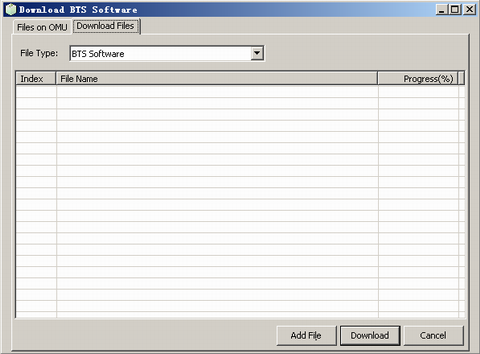
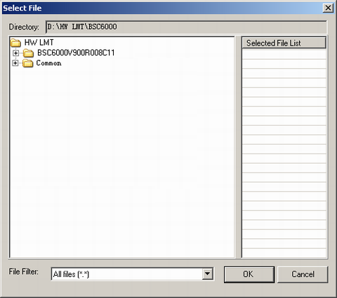
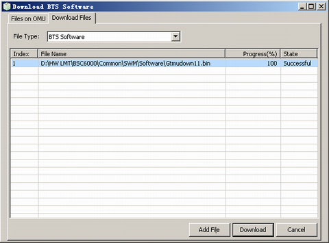
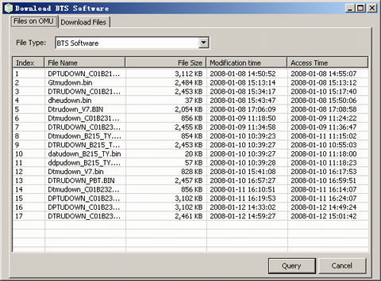

This describes how to download the BTS software to the server from the LMT through the FTP server.
Prerequisites
- The LMT runs normally.
- The communication between the LMT and the BSC is normal.
- The BST software exists on the LMT.
- The FTP server runs normally.
Context
To apply for the BTS software, visit http://support.huawei.com.
 CAUTION:
CAUTION: The name of the downloaded file must contain only English letters and the file cannot be in use during the download process; otherwise, the downloading fails.
The following description is based on the configuration using the GOMU.
Procedure
- Through GUI
- Choose . A window is displayed, as shown in Figure 1.
Figure 1 Downloading the BTS software
- Click Add File. A dialog box is displayed, as shown in Figure 2.
 NOTE:
NOTE: By default, the files to be downloaded are stored in the Common folder or in its lower-level folder in the LMT installation path.
Figure 2 Selecting a file
- Double-click the files to be downloaded. The files are displayed in the Selected File List box.
- Click OK. The selected file is displayed in Figure 3.
- Click Download. After the download is complete, a window is displayed, as shown in Figure 3.
Figure 3 Result of downloading the BTS software
- Click the Files on OMU tab page. A window is displayed, as shown in Figure 4.
Figure 4 Querying the BTS software
- Click Query to query the files on the OMU.
- Click Cancel.
- Through MML
- Run the DLD BTSSW command on the LMT to download the BTS software.
Copyright © Huawei Technologies Co., Ltd.